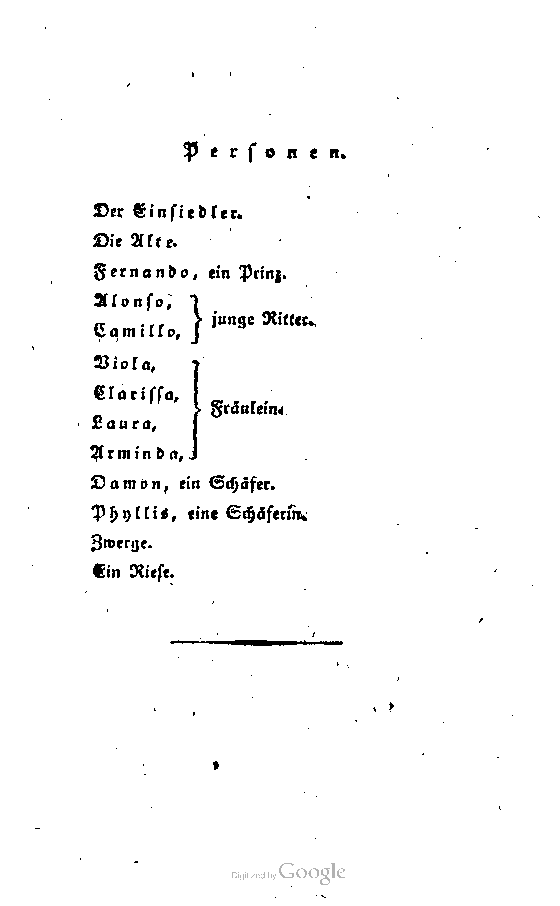
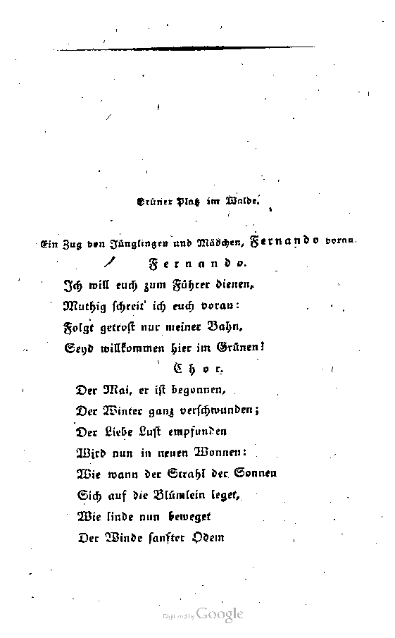
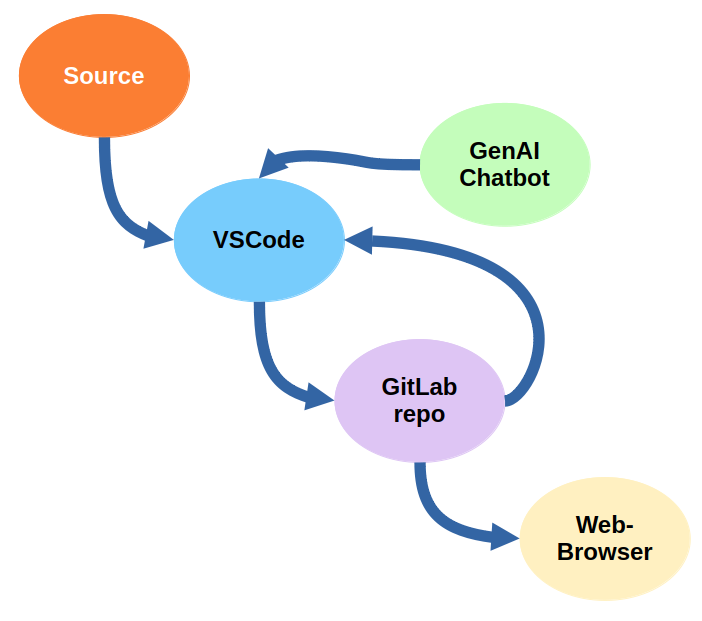
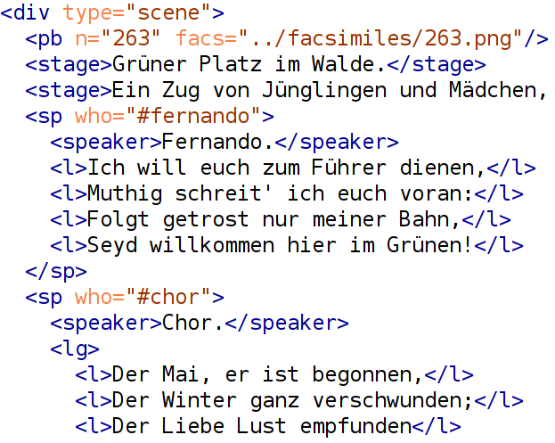
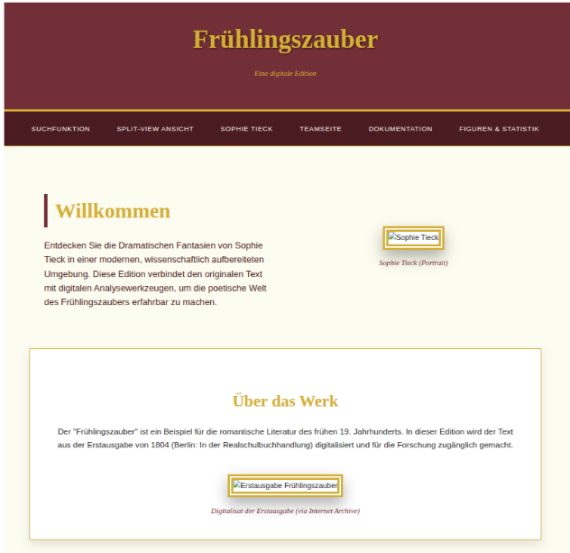
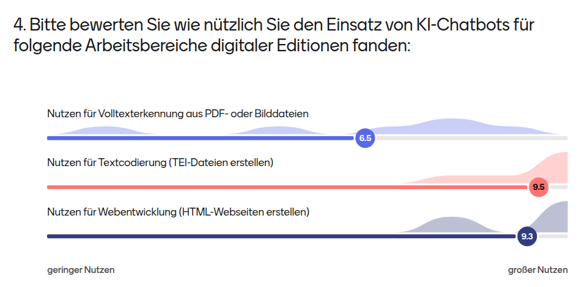
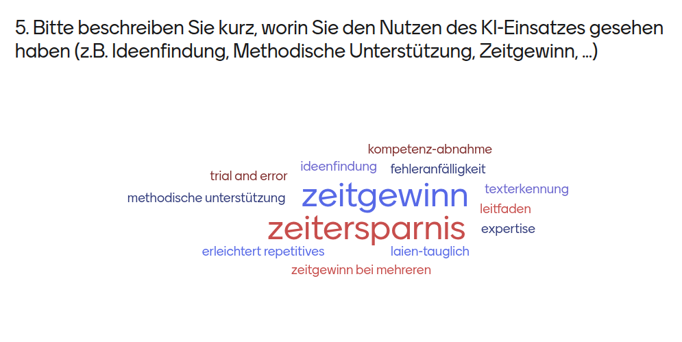
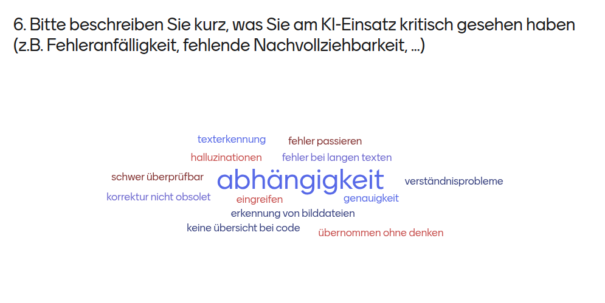
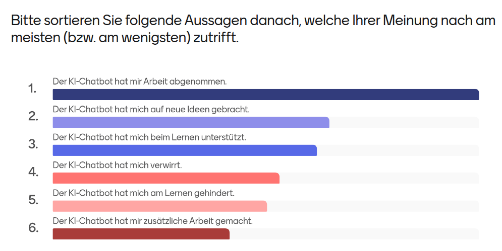

Creating a Digital Edition with Generative AI
in a
Seminar Setting
Ulrike Henny-Krahmer (Universität Rostock)
TEI Conference, Vancouver, August 13, 2026.
Presentation: https://hennyu.github.io/tei_26/
Overview
| Digital Scholarly Editions, Generative AI, and DH teaching and learning |
|
| The seminar: Sophie Tiecks Dramatische Fantasien.
Workflows für eine digitale Edition mit
generativer KI |
|
Digital Scholarly Editions, Generative AI, and DH teaching and learning
DSE and generative AI
- typical steps in a digital scholarly edition workflow:
- text transcription
- text encoding
- text conversion
- GenAI can support these and other steps in a DSE workflow (see, e.g., experiments
documented in Pollin et al. 2025)
Some reasons for using GenAI in teaching and learning about DSE
- current ubiquity of GenAI (relevance for job market and to students' daily lives)
- possiblity to combine GenAI topics with other DH topics (hence, also DSE)
- methods easily accessible to users from a single platform via
conversation with the bot
- reflective aspect is essential
The seminar: Sophie Tiecks Dramatische Fantasien.
Workflows für eine digitale Edition mit
generativer KI
Practical information about the seminar
Goals of the seminar
- learn about the female German writer Sophie Tieck (*1775, †1833)
- create a DSE prototype of one of her Romantic plays (Frühlingszauber, 1804)
- thereby learn:
- what a DSE is
- about DSE workflows (steps, collaborative work)
- about GenAI
- reflect on the usage of GenAI for scholarly tasks
The play Frühlingszauber
|

|

|
Workflow and tools used in the seminar
- GitLab repository (hosted by University of Rostock)
- Visual Studio Code Editor (hosted by University of Greifswald)
- Chatbot (gemma4, hosted by University of Greifswald)
- Browser (to look at HTML results)
|

|
Step 1: text recognition
- zero shot prompt with role, instructions, goal, constraints
- text was extracted from PDF of images that contained basic OCR
- problem: chatbot did not process the whole file at once
Step 2: text encoding
- a very long prompt (one shot)
explaining the TEI encoding strategy and giving one example
- this worked very well!
|

|
Step 3: text conversion
|

|
- individual prompts to produce HTML (with CSS and JS), directly from TEI
- astonishing results were produced
|
Evaluation of the seminar by the students (1)

Evaluation of the seminar by the students (2)

Evaluation of the seminar by the students (3)

Evaluation of the seminar by the students (4)

Thank you very much for your attention!
References
- Pollin, Christopher, Franz Fischer, Patrick Sahle, Martina Scholger, and Georg Vogeler (2025):
“When it was 2024 – Generative AI in the Field of Digital Scholarly Editions.” Zeitschrift für
digitale Geisteswissenschaften 10. https://doi.org/10.17175/2025_008.
- Fritsche, Katrin und Sander Münster (2024): “Taking up Artificial Intelligence as Teaching and
Learning Content in the Digital Humanities – Topics, Categorisations, and Examples.” In
Proceedings of the 8th International Conference on Advanced Research in Teaching and Education.
https://doi.org/10.33422/icate.v1i1.225.
- Haberstok, Monika (ed.) (n.d.). Sophie Tieck [Website]. https://www.sophie-tieck.de/.